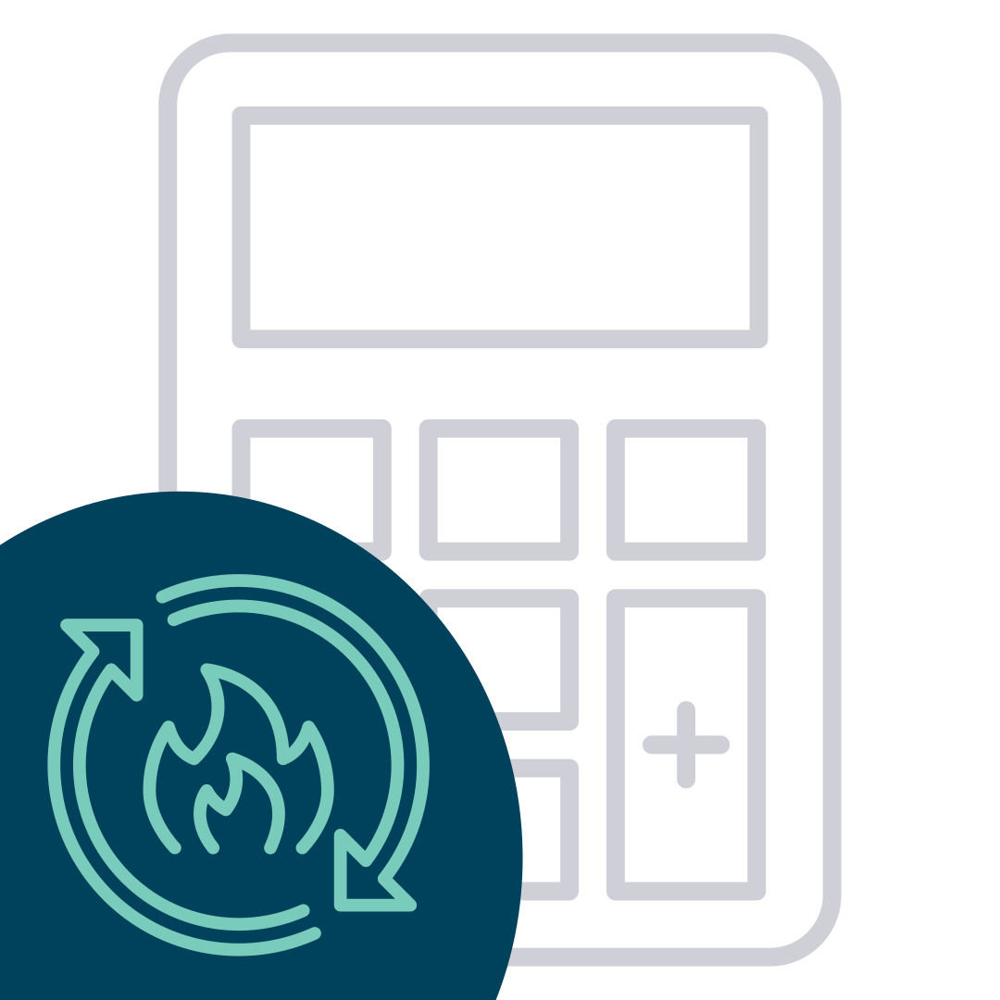

CALCULADORA DE TMB
Taxa Metabólica Basal é a quantidade mínima de energia que seu corpo precisa para manter as funções vitais em repouso, como respirar, circular sangue, manter a temperatura corporal e as células funcionando.

CALCULADORA DE TMB
Descubra mais sobre o seu corpo
Preencha e confira seu resultado
Atenção: O resultado desta ferramenta não dispensa a consulta com um médico ou profissional especializado.